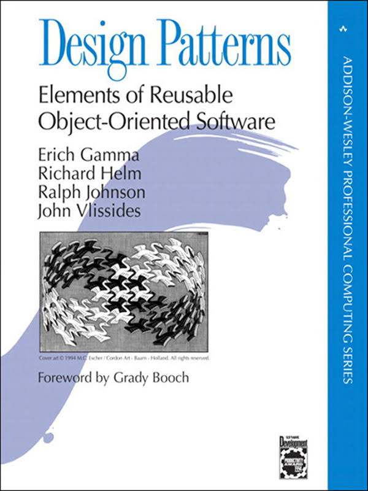

A great developer knows more than <code/>
Paul Heasley
@pheasley
http://phdesign.com.au

What makes a great developer?
Decide on your career path before it's decided for you
Picture your career as a skill tree
Start broad, expand your options
Discover your interests and strengths
Choose a discipline(s) to specialise in
Sometimes your hobbies should stay a hobby
Find a role model
Choose your roles strategically
How do you get the right roles?
Patterns and practices
Don't re-invent the wheel
The 'Gang of Four' patterns book
Design Patterns: Elements of Reusable Object-Oriented Software
Practices
Planning and estimation
Requirements gathering
Solution design
Coding standards (e.g. naming conventions)
Coding practices (e.g. TDD / code reviews)
Communicable code
if (!el.offsetWidth || !el.offsetHeight) {
...
} vs.
function isVisible(el) {
return el.offsetWidth && el.offsetHeight;
}
if (!isVisible(el)) {
...
} Domain-Driven Design
Tackling Complexity in the Heart of Software
Eric Evans
Specialists vs. Generalists
Community of practice
Estimation
Don't give estimates in perfect days, talk in real duration
Plan for 4 hours / day of undisturbed development
Don't estimate
Use story points, measure velocity
Learn user empathy
Use the product
Read comments and complaints
Talk to product owners
Do first line support
Perform user research
You built...

They wanted...
Leadership
People leaders vs. Craftsmanship leaders
You don't have to become a people leader
Still with me?
We're nearly done.
- Explore different disciplines / technologies early on
- Decide on your specialisations
- Set career goals
- Become a great developer so you can get the right roles
Thanks!
http://phdesign.com.au/presentation-more-than-code
@pheasley